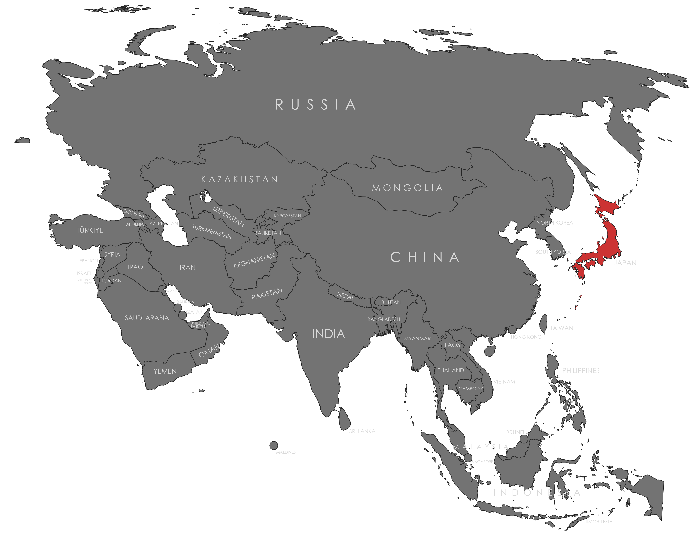

Specifications
- Local Name: 日本 (Nihon / Nippon)
- Proportion: 2:3
- Name of the Flag: Nisshōki (日章旗) or commonly Hinomaru (日の丸)
- Adopted: August 5, 1854 (modern version standardized on August 13, 1999)
Symbolism
- White background: Purity and honesty
- Red circle: Sun; represents brightness, sincerity, warmth, and the Japanese spirit
- Red circle in the center representing the sun, reflecting Japan’s nickname “Land of the Rising Sun"
Colors:
Shapes / Symbols:
Meaning / Special Display
- Used as a national flag: Represents peace, unity, and national identity
- Used during wartime historically (military flags had variations with rays): Symbolized power and sovereignty
Description
- The flag symbolizes Japan’s identity as the “Land of the Rising Sun” and reflects values such as honesty, purity, and brightness.
- For its citizens, it represents unity, respect for tradition, and pride in Japanese culture.
